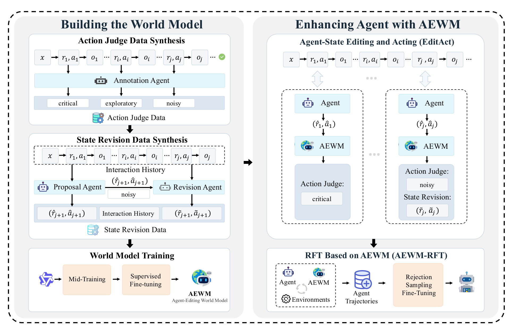
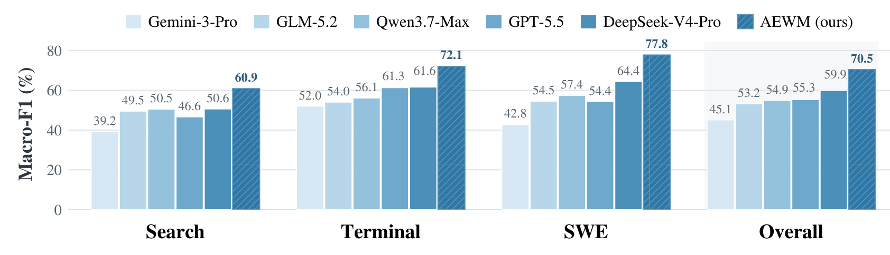
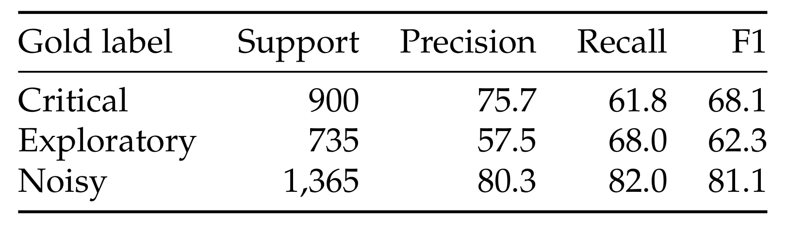
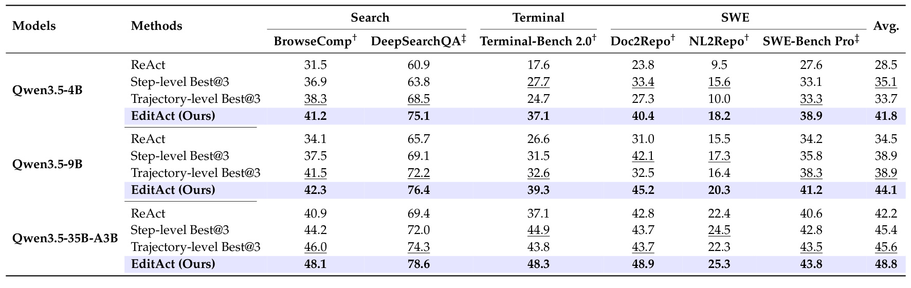
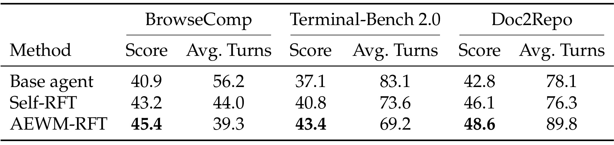
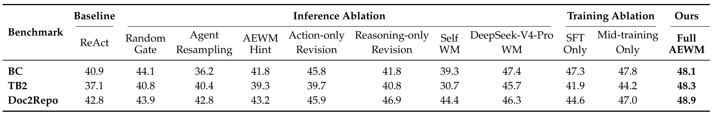
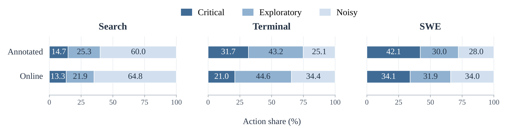
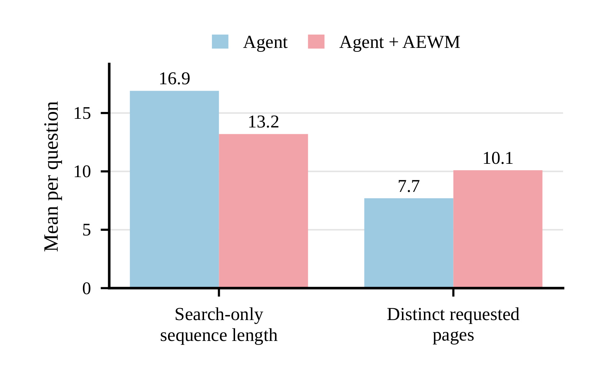

Agent-Editing World Model：把世界模型从预测工具输出转向修订代理状态
中国人民大学高瓴人工智能学院的 Shuang Sun、Guoxin Chen 等提出 AEWM，研究长程大模型代理为何在拿到真实工具反馈后，仍会沿着错误假设继续行动。论文英文题名为 Agent-Editing World Model: Rethinking World Modeling for LLM Agents，中文可译为“代理编辑世界模型：重新思考大模型代理的世界建模”。arXiv 首次提交为 2026 年 9 月 23 日，PDF 首页署日期为 9 月 24 日；本文依据 v1 主文与附录精读，记录于 2026 年 9 月 25 日。论文入口；官方代码仓库已核验存在推理与评测实现，但训练数据、完整轨迹、本地环境和凭据并未随仓库打包；权重与评测集另行分发，本次没有完成训练复现。
当真实工具已经能够提供反馈时，重建高熵且依赖实际执行的工具响应，未必能帮助代理完成任务；与此同时，缺乏证据的假设和过时计划却会持续留在历史中，扭曲接下来的决策。代理需要修正的是自己对任务进展的理解，而不只是预测下一条观察。
1. 背景和问题
1.1 真实反馈为什么仍不足以纠错
AEWM 的出发点是长程代理中的一种不显眼但常见的失败：模型没有缺少工具，也不一定没有看到反证，却没有把反证正确纳入接下来的决策。例如搜索代理先猜出一个候选对象，之后不断搜索支持它的材料，把相邻概念当作题目要求的关系；代码代理完成了新输入格式支持，遇到旧测试失败时先怀疑测试过期，没有意识到旧接口契约仍需保留；终端代理读到了部分执行结果，便把中间成功等同于最终交付完成。这些错误能够产生语句流畅、局部合理的下一步，因此单看某轮推理的可读性很难识别。
论文把这个过程称为任务状态污染。这里的状态不只是磁盘文件、网页位置或外部环境变量，也包含代理通过历史形成的工作假设、已验证进度和当前计划。一旦“可能成立”被写成“已经确认”，或“一个测试成功”被写成“任务已完成”，它便进入后续上下文，影响检索词、文件修改位置和停止时机。下一次推理会把上一次的错误解释当作依据，形成自我增强链。真实观察仍然存在，但其意义被模型已有叙述遮蔽，单纯把更多工具结果追加到上下文里并不能保证更新正确。
这个定义也限定了论文没有解决什么：AEWM 不是外部环境的回滚器，不会把已经执行的坏命令从现实中撤销；它不自动清空旧历史，也不声称修复所有过去的错误。它介入的是尚未执行的当前推理和行动，在错误即将继续扩散时更换下一段续写。旧历史作为证据保留，新推理承认约束或修正假设，新行动去获取区分性证据或实施实际修复。因而“编辑代理状态”不能读成任意篡改工具输出，也不能读成把不利事实从历史中删除。
1.2 与工具响应预测、批评和多次采样的区别
传统世界模型学习行动条件下的状态转移或观察分布，在物理环境和视觉生成里，重建下一状态本身具有明确价值。许多语言世界模型沿用这条路径，预测搜索返回、终端输出或测试结果。作者认为，在本研究覆盖的任务里，这些观察往往高熵并且强烈依赖执行细节：搜索引擎排序和网页内容会变化，终端命令依赖文件系统、依赖版本和运行状态。如果真实工具可以调用，先用语言模型猜一遍完整响应，既耗费能力，也可能产生不存在的证据。这样的模拟即便流畅，也未必改善代理如何解释证据和选择下一步。
AEWM 保留了“预测行动的后续效果”这一世界建模动机，但把预测目标压缩为三种决策贡献：关键、探索和噪声。它不需要提前知道命令的每一行输出，而是判断这个命令是否能补上当前的必要验证、缩小未知空间，还是重复已有失败方向。这使方法与一般的步骤打分存在接近之处；其具体新意应结合监督来源和干预接口判断，而不能只由“世界模型”这个名称推导。论文用经过真实轨迹回看确定的贡献类别监督执行前判断，再学习从同一前缀生成替代推理和原生工具调用。
显式保留探索类很重要。长程任务常常无法一开始就知道最短路径，一次失败的命令也可能排除一个有意义的假设，读取一个最终未引用的页面也可能澄清歧义。如果把所有未直接出现在成功路径里的行动都判成错误，模型可能变得过于保守，失去必要的信息采集能力。因此探索行动应以可获得的信息增益和对后续理解的贡献评价；“没有立刻完成任务”和“没有价值”是两回事。反过来，看似合理的动作如果只重复已经得到的证据，也不能靠措辞专业获得高评价。
它与批评式自我修正的不同在于控制权。批评通常额外写一段提醒，让原代理再次生成，而代理可能仍保留原先的错误判断，或把提醒当作旁支信息。EditAct 直接选择最终进入轨迹的推理—行动对，令修订后的解释成为下一次推理的起点。它与 Best@3 的不同则在候选来源：后者从原代理已能提出的三个候选中选择，前者让专门训练的修订模型生成新的续写。二者都增加测试时计算，不能把性能差异自动解释成同成本收益，但可以检验专门的干预是否比多采样更有效。
1.3 研究问题如何落到可检验的证据
本文实际需要回答三个层次的问题。第一，专门训练之后，模型能否只凭当前可见历史识别不良行动，而不是事后知道答案才说该行动无用？第二，判断后直接改写是否改善完整任务完成率，还是仅让推理显得更整洁？第三，由编辑获得的有效轨迹能否转成代理自身能力，在部署时不再持续调用辅助模型？作者分别设置了三千条行动判别评测、六个基准上的在线 EditAct，以及三个领域分别进行的 AEWM-RFT。这三个证据不能相互替代：分类宏平均 F1 的提高不是任务得分提高，在线收益也不是蒸馏后一定保留的收益。
它与推荐研究的联系首先在搜索和证据选择，而非论文已经验证了点击率。在个性化检索或推荐解释代理里，过期用户偏好、未经核实的商品属性和错误会话假设，同样可能进入长期上下文并持续影响查询或候选选择。区分已验证事实与工作假设、对下一次行动做局部修订，是可能迁移的机制。但是本文没有推荐曝光日志、排序指标或线上用户实验，不能据此声称能够提升召回率、排序收益或用户满意度。对于大模型系统，证据更直接：搜索、终端和软件工程都需要长期维护约束，且其局部行动能够通过真实执行获得反馈，这正是 AEWM 所依赖的条件。
2. 方法
2.1 行动判别与状态修订
原文首先把执行前状态写成任务、已提交交互和当前提案的组合。这样区分“已经发生”和“模型刚刚想做”后，编辑器能够替换后一部分，又不污染真实证据。
符号解释：$x$ 是用户任务，$t$ 是当前轮次，$h_t$ 是此前可见历史，$r_i$、$a_i$、$o_i$ 分别是第 $i$ 轮已经提交的推理、行动和真实观察，$\pi_\theta$ 是原代理策略，带帽变量表示尚未执行的提案，$\oplus$ 表示按顺序拼接，$s_t$ 是完整执行前状态。这里历史不能含当前行动的结果；否则判别问题会退化为事后解释。当前推理是模型公开生成并写入轨迹的推理内容，不应把符号理解成可以读取任何模型内部隐藏状态。
符号解释：$M_{\mathrm{AJ}}$ 是 AEWM 的行动判别能力，$\hat y_t$ 是对提案贡献类型的预测。关键类补足必要缺口、获取关键证据或执行必需状态改变；探索类检验合理分支并减少不确定性；噪声类包括重复、无关、违反约束或沿错误方向前进。类别是条件于前缀的预期判断，不是行动的永久属性，同一命令在不同历史下可以有不同价值。
符号解释：$M_{\mathrm{obs}}$ 表示传统观察预测模型，$\hat o_t$ 是它预测的工具响应；$M_{\mathrm{SR}}$ 是状态修订能力，波浪符号表示替代的推理、行动与新状态。这是原文式（1）的对比关系。AEWM 的输出仍然是要去执行的决定，而非冒充已观测的结果。同一模型支持 AJ 与 SR，但两种调用承担不同任务；修订必须以原有可见证据为依据。

Figure 2 左半部分按数据产生顺序阅读：已有真实轨迹先由标注代理逐轮分出关键、探索和噪声行动；初步判别器再帮助识别提案代理的噪声提案，修订代理在相同历史上生成替代续写。这些记录一部分形成宽覆盖的中期训练数据，一部分经过严格质量筛选成为监督微调样本。图中两个数据路径不是同一件事：判别学习“该不该介入”，修订学习“应该怎样继续”，前者的标签不能单独训练出可执行的好动作，后者如果没有门控也可能覆盖本来正确的决策。
右半部分把部署路径与再次训练分开。在线 EditAct 中原代理先提案，AEWM 判断后只对噪声提案进行替换，选中的动作交给真实环境执行。下方 AEWM-RFT 则收集这种交互中经过验证的轨迹，用拒绝采样微调把优质续写内化回代理。图上同样出现“训练”和“代理”，却不能据此认为每个测试任务都在更新参数：在线编辑改变当前上下文，离线 RFT 改变后续部署的代理参数。这一区分直接对应后文两套实验。
尤其要注意从观察到修订之间的方向：训练时真实后续能够帮助判断一个动作是否有用，部署时却必须在它发生前作出预测。图中完整轨迹供给标注器的箭头，不等于给线上判别器开放未来结果。实际实现需要在数据字段与工具协议上维持这一隔离。对已有代理系统而言，接入点是提案生成完成、原生工具尚未执行之时；如果工具已产生外部副作用后才调用修订器，就不再是图中所评估的执行前干预。
2.2 EditAct：执行之前替换当前续写
原文式（2）把门控写得很直接：保留关键和探索，替换噪声。这个设计不反复迭代搜索到判别器满意，也不为每一步强制生成三个候选；它把额外生成集中在被判断需要修正的当前提案上。
符号解释：$(r_t,a_t)$ 是最终提交进轨迹的推理和行动；带帽项是原代理提案，波浪项是 SR 生成的替代项，$\hat y_t$ 决定走哪个分支。门控的作用是避免每轮都覆盖原代理，特别是保留合理探索；代价是误把有益行动判成噪声时仍可能引发错误干预。关键与探索之间的混淆在这个路由里不会直接改变分支，而与噪声之间的混淆更影响执行。
符号解释：$E$ 是真实工具环境，$o_t$ 是选中行动执行后的真实响应，$h_{t+1}$ 是下一轮历史。这是原文式（3）。新的推理、真实动作和实际观察一同保留，下一次生成以更新后的历史为条件。修订的价值不仅是换一个命令，还在于让正确的任务解释与那个命令一起进入未来上下文。原文在线循环描述作用于非最终步骤，结束动作还受各领域终止协议约束，不能据此把模型的“任务完成”文字当作环境验收成功。
2.3 合成监督与两阶段训练
AJ 数据从经验证的成功轨迹逐轮拆分。标注代理能回看整条轨迹，用实际观察与后续贡献确定类别，但输出给学生的判别理由必须严格前向，只能使用当轮前缀可见事实。作者检查类别一致性、行动与观察对齐、调用有效性和未来信息泄漏。附录强调每个标签只描述一条已观察续写，不能证明行动在所有可能未来的真实价值。SR 数据由 Qwen3.5-35B-A3B 提案，经 AJ 检查点识别噪声后，由 DeepSeek-V4-Pro 修订并真实执行；只有出现有用证据、状态改变或任务进展的样本才保留。原提案没有执行，因此不能凭空补出它本来会得到的观察。
附录 A 给出的中期训练规模精确为 52.16B token，其中 AJ 20.56B、SR 25.01B、原始轨迹 6.59B。三个领域分别为 Search 23.32B、Terminal 6.73B、SWE 22.11B，领域覆盖不等于 token 数均匀。后续 SFT 共十二万例，AJ 和 SR 各六万，三个领域各四万；Search 的 AJ 使用关键、探索、噪声为四千、四千、一万二千的配比，另两个领域大致均衡。语义审计每一项零到四分、至少三分，并另设硬拒绝条件，所以格式正确不是样本合格的充分条件。
两阶段均以 Qwen3.5-35B-A3B 为骨干，通过 verl 的 Megatron 后端训练；中期训练从预训练模型开始，SFT 接其检查点。批大小分别为 512、256，最大序列长度为 262144、131072 token，学习率均为十万分之一，轮数分别为一轮、五轮，精度为 bfloat16。这说明 AEWM 不是仅靠一个提示词组成的小插件：它依赖大规模交互知识和专门校准。原文没有给出一个额外编号的联合损失式，本笔记不补写未经论文确认的奖励或损失组合；这里的重点是监督目标和数据可见性，而不是发明新的优化公式。
2.4 AEWM-RFT：把编辑轨迹内化进代理
AEWM-RFT 把 EditAct 产生的经验证轨迹用于拒绝采样微调，包括被修改的局部动作及其后的连续决策。Self-RFT 对照则只收集原代理自行完成的成功轨迹。二者使用相同任务、同一骨干、同样过滤和训练配置，关键差异是轨迹生成时有没有 AEWM。Search 各保留四千条，Terminal 各七千零九十五条，SWE 各一千四百五十六条；Search 控制长度与多样性，避免只保留短简单任务，SWE 的轨迹筛选得分门槛大于 0.6，与 SR 结束决策的更高门槛不能混用。
这三类代理分别在各自领域微调，不是把三域 RFT 合并成单个通用代理。训练后均用 ReAct 推理，不再线上调用 AEWM。因此它减少的是部署时对编辑模型的依赖，不意味着前期数据收集和微调免费，也不保证每个领域调用轮数都减少。它希望把“发现证据冲突后重新检查”“保持接口契约”“完成交付前验证”等模式内化；这需要后续轨迹继续使用修订获得的证据，而不是只模仿某条孤立的更漂亮推理。
3. 实验结果
3.1 评测任务、基线与可比范围
六项基准覆盖三种工具环境。BrowseComp 为深度搜索准确率，DeepSearchQA 为多步答案列表的 F1；Terminal-Bench 2.0 为终端任务准确率；SWE-Bench Pro 为修复解决率，Doc2Repo 和 NL2Repo 则为从零实现仓库的平均测试通过率。附录列出任务数依次为 1266、900、89、731、50、104。不同列虽然都用百分数表示，分母、任务难度和业务含义并不相同，表中 Avg. 是六个基准分数的算术平均，不是合并所有测试样本得到的总体成功率。DeepSearchQA 和 SWE-Bench Pro 被作者标为分布外，其余为分布内；这是相对论文训练分布的定义，不代表任意真实业务都具有相同迁移程度。
ReAct 是原代理交替思考和行动；步骤级 Best@3 每轮从同一真实历史采样三个推理—行动候选，由 DeepSeek-V4-Pro 选择；轨迹级 Best@3 独立运行三次后由同一验证器选最终结果。Search 比较答案，SWE-Bench Pro 与 Doc2Repo 比较补丁，Terminal 与 NL2Repo 因不适合提取独立补丁而比较轨迹。所有方法在同一骨干内共享任务、环境和判分协议。每个基准独立评测三次并报告均值，但主结果未提供足以重算置信区间的逐次分数，所以很小的差距不宜直接称作统计显著。
执行预算同样影响解读：Search 最多六百步并使用二十五万六千 token 上下文；Terminal 没有显式步数上限，而是每任务一万零八百秒；三个 SWE 基准分别有四百或五百步等限制。AEWM 判别每次最多八千 token，修订最多三万二千 token。Search 的长工具观察还会按规则折叠，因此可见历史并不总保有全部网页原文。额外模型调用、工具次数、上下文折叠和环境预算共同决定成本；仅用代理参数量或轮数比较，不能替代完整的延迟与费用评测。
3.2 判别能力：总体分数和错误类型
判别基准含三千条执行前决定，每域一千条，关键九百、探索七百三十五、噪声一千三百六十五。它来自已验证轨迹，经 DeepSeek-V4-Pro 三次独立标注一致性筛选，再由 GPT-5.6-Sol 按规则审查。测试模型只见任务、工具说明、当前历史和提案，不见当步输出、后续消息、最终得分和金标签。一次调用给一个判断，不进行标签投票或按正确性重采样；不可解析结果计为错误。

Figure 3 横轴是 Search、Terminal、SWE 和 Overall，纵轴为宏平均 F1，各颜色表示被比较模型。AEWM 三域分别达到 60.9、72.1、77.8，总体 70.5；最强对照 DeepSeek-V4-Pro 总体为 59.9，因此论文摘要中的提升是 10.6 个百分点。跨域最强对照分别为 50.6、61.6、64.4，对应提升 10.3、10.5、13.4。图中 Search 明显更难，意味着噪声检索与有用探索的界限更依赖隐含约束和证据关系；它不能由另两个领域的高分掩盖。
总体值需要按附录 B 的计算口径理解：作者把三千个判断先合并，再计算三个类别的宏平均 F1，不能简单平均图上三个领域的 F1 当作同一指标。附录 Table 11 另给总体准确率 72.5，而最强对照为 60.8。这也表明 70.5 不是准确率，更不是完整任务的完成率。三类标签不均衡时，宏平均指标能够让探索类别的识别质量有独立权重，避免仅靠多数噪声样本获得看似不错的总体判断。
这些结果支持“专门训练能提高行动贡献分类”的主张，但金标签是由模型标注、复核和筛选形成的，不是逐个动作的人工因果价值测量。基准也从成功或高分轨迹抽取，真实部署中更混乱的失败历史可能有不同分布。分类器与标注规范高度一致是重要成果，却仍需要通过端到端任务验证有益性。对接入方而言，更有用的进一步问题是误杀探索的比例和漏掉噪声的比例，而不只是选择整体柱子最高的模型。

Table 12 将总体判断按真实类别拆开。Noisy 的精确率 80.3、召回率 82.0、F1 81.1，是三类里最高；Exploratory 的精确率只有 57.5、召回率 68.0、F1 62.3；Critical 的精确率 75.7、召回率 61.8、F1 68.1。Support 列说明真实样本量，不能把高频类别的优势仅用模型能力解释。最弱的探索类恰好对应长程任务中“暂时没有答案但值得尝试”的灰区，说明显式设一个类别只是让问题可表达，并未消除判断难度。
在 EditAct 的实际分支里，关键和探索都会原样保留，所以二者互相混淆的直接后果相对有限。更敏感的是把探索判成噪声而强制改写，或把噪声判成探索而继续执行。表中没有完整混淆矩阵，不能由这几个汇总数精确恢复两种错误的发生率。它给出的 Noisy 精确率意味着噪声预测并非总对，部署时不应赋予编辑器无需审查的绝对权威；但 Noisy 召回率较高又说明它能覆盖相当一部分被标注为低价值的动作，与门控设计的核心需求一致。
从研究复现看，值得保留三类结果而不是只转成“好/坏”二分类，因为探索错误可以帮助理解不同任务的失败来源。若未来测试中总体 F1 提升而探索被过度压制，就可能出现更短但更容易过早结束的轨迹。反过来，放过更多探索会增加交互预算，也可能提高完成率。当前表格只刻画既定类别决策下的结果，没有阈值扫描和成本曲线，因此不能推导某个部署场景应该采用多少干预率。
3.3 在线 EditAct：六项任务与三种骨干

Table 1 每个骨干包含 ReAct、步骤级选择、轨迹级选择和 EditAct 四行，列按搜索、终端、软件工程分组。最右侧 Avg. 对 Qwen3.5-4B 分别为 28.5、35.1、33.7、41.8；对 9B 为 34.5、38.9、38.9、44.1；对 35B-A3B 为 42.2、45.4、45.6、48.8。由此得到相对最强基线的平均提升 6.7、5.2、3.2 个百分点，不能把相对 ReAct 更大的提升与这些数字混着使用。小骨干获益较多，说明外部判断和修订可以补上原代理难以自行发现的路径。
对最大骨干逐列看，EditAct 为 48.1、78.6、48.3、48.9、25.3、43.8。相对同骨干 ReAct，分别增加 7.2、9.2、11.2、6.1、2.9、3.2 个百分点，其中终端任务的绝对改进最明显。NL2Repo 仍只有 25.3 的测试通过率，说明长程仓库生成远未解决；SWE-Bench Pro 相对轨迹级 Best@3 仅多 0.3，不能把所有单项收益描述成同样强。平均数能显示跨任务一致方向，但工程投入应结合具体任务而非只看一个总排名。
9B 加 EditAct 的平均 44.1 超过 35B-A3B 单独 ReAct 的 42.2，是论文强调的规模差距缩小现象。这里的辅助 AEWM 自身采用 35B-A3B 骨干，因而不能据此宣称一个九十亿参数系统以更少总计算替代大模型；比较的是代理骨干，而完整系统还包含编辑模型。对于已经有大模型服务的团队，这可能是一种能力分工方式，但需要测量辅助调用成本。主文另报告 Qwen3.5-Plus 的 BrowseComp 从 44.1 到 52.7，而 Terminal 和 SWE 改善有限；作者将其与辅助模型相对更强代理的能力差距联系起来，提示编辑器也有能力上限。
主表在作者标记的两项分布外任务上仍有提升，支持一定迁移能力。不过相同任务预算不代表相同总 token、墙钟时间或 API 成本，Best@3 与 EditAct 的计算分配不同。这张表最稳妥的结论是：在所述框架、骨干和评测协议下，执行前编辑优于列出的选择基线；是否值得用于在线高频链路，还需要额外的成本与故障容忍证据。
3.4 AEWM-RFT：移除在线指导后的收益

Table 2 比较基础 35B-A3B、Self-RFT 和 AEWM-RFT，所有行部署时都没有 AEWM 指导，这一点使它与主结果表完全不同。BrowseComp 得分依次为 40.9、43.2、45.4，Terminal 为 37.1、40.8、43.4，Doc2Repo 为 42.8、46.1、48.6。相对使用同样筛选配置的 Self-RFT，编辑轨迹再带来 2.2、2.6、2.5 个百分点。因此数据来源改变的收益在移除辅助模型后仍部分保留，而不是完全依赖部署时多一个强模型。
平均轮数展示了更复杂的效率关系。BrowseComp 从基础模型 56.2 轮降到 AEWM-RFT 的 39.3，Terminal 从 83.1 降到 69.2；相对基础模型分别约减少 30.0% 和 16.7%。但 Doc2Repo 从基础模型 78.1 轮、Self-RFT 76.3 轮增加到 AEWM-RFT 89.8 轮。这个例外不能隐藏：更完整的软件实现和验证可能需要更多交互，性能提升与少走步骤并非总是一致。作者把该结果解释为更好的持续进展，而不是所有任务都更短。
平均轮数还不是平均成本。一轮可能是短查询，也可能包含长推理、多个文件编辑或耗时测试；训练数据收集阶段需要 EditAct，部署阶段虽然不再调用编辑器，仍承担微调的前期成本。表中对照控制了任务数据、轨迹数量、筛选和训练配置，较好地隔离轨迹来源，但没有展示最终训练后策略的全部行为分布，也没有给出每个任务的个体变化。实际复现宜同时记录完成率、轮数分布、总 token 和关键工具耗时，尤其防止更好的均值来自少数任务的大幅提高而掩盖其他任务退步。
此外，这里的三个结果来自领域分别微调的代理，不应合并成“一个模型在所有领域都提高”。对于希望无在线辅助部署的场景，AEWM-RFT 给出可行路径：把有帮助的干预转为可验证学习数据；它仍要求高质量验收器和足够覆盖的任务集合，并不能靠收集所有编辑后的轨迹自动保证收益。
3.5 消融：到底是门控、改写范围还是训练有效

Table 3 固定 35B-A3B 代理，按行看 BrowseComp、Terminal-Bench 2.0 和 Doc2Repo，按列拆开七种推理替代和两种训练退化。完整 AEWM 为 48.1、48.3、48.9；按域噪声率随机介入只有 44.1、40.8、43.9。随机门控仍可能超过 ReAct，但学到的介入位置更有效，说明“总是多做一次生成”不足以解释全部收益。这个对照控制的是干预率分布，不是证明某一特定动作的因果效果。
只让原代理重新采样，在 BrowseComp 降到 36.2，低于 ReAct 的 40.9；只给 AEWM 提醒为 41.8。完整替换则达到 48.1，支持直接改变下一段状态的必要性。在终端上，行动单独修订为 39.7，推理单独修订为 40.8，都明显低于联合的 48.3；Doc2Repo 推理单独修订达到 46.9，也仍低于联合。只换命令可能让错误解释继续留存，只换解释又可能不改变实际行为，这与两部分联合进入下一轮历史的机制相吻合。消融说明两部分在当前实现下互补，却不意味着任何批评式方法都必然无效。
换辅助模型也有区别。Self-WM 在三个基准为 39.3、30.7、44.4，前两个甚至不如原代理单独行动，提醒我们低能力自我干预可能有害。使用 DeepSeek-V4-Pro 作世界模型为 47.4、45.7、46.3，仍低于专门训练的 AEWM。训练消融中，只 SFT 为 47.3、41.9、44.6，只中期训练为 47.8、44.2、47.0；完整训练进一步改善。终端对两阶段结合更敏感，而搜索增益较小，应避免从一个平均结论推导相同训练配方对所有域都同样必要。
该表没有穷举所有阈值、训练规模和辅助模型配置，也没有给出匹配总计算后的曲线，所以它提供的是机制相关证据而非完备最优性证明。工程上最值得复现的是三个独立旋钮：在哪些位置介入、究竟替换哪段内容、辅助模型是否真的比原代理更擅长诊断当前任务；直接把三者捆绑上线会失去判断收益来源的能力。
3.6 行动分布：探索与噪声的领域差异

Figure 4 每个领域有 Annotated 与 Online 两条堆叠横条，横轴是行动百分比，三段分别为关键、探索和噪声。Search 的标注分布是 14.7、25.3、60.0，在线分布是 13.3、21.9、64.8；Terminal 分别为 31.7、43.2、25.1 和 21.0、44.6、34.4；SWE 分别为 42.1、30.0、28.0 和 34.1、31.9、34.0。舍入会使总和略偏离一百，不应再把这些展示值当作精确计数使用。
首先，标注语料分布不是 SFT 混合配比，也不是三千条判别基准的类别分布。作者对后两者做过选择和配额控制，不能将图上的 Search 噪声六成与训练样本数字直接对齐。其次，在线标签由 AEWM 自己预测，并非独立人工复核的真实噪声率，所以与标注分布大致相似，只能说模型保留了领域行为差异，不能证明每次线上判断都正确。尤其终端噪声份额从 25.1 到 34.4 的变化，还可能包含任务、骨干或分类误差影响。
领域差异与任务性质相呼应：搜索容易被早期候选锚定，产生大量没有补足关键证据的检索；终端需要尝试和诊断，探索份额最高；软件工程有较多直接完成需求的关键步骤，同时仍存在遗漏契约和错误依赖理解。对于统一判别器，这意味着不能用一个僵硬的“减少步骤”目标代替决策贡献判断，否则终端探索可能首先被压制。
从系统成本看，Online 中 Search 约六成提案被判为噪声，意味着在此域修订并不是极少数异常触发。实际额外调用开销可能相当可观，不能只凭“选择性介入”四个字认定廉价。若迁移到另一类工具，应该先测本域判别与干预分布，再决定是否需要缓存、较小编辑器或离线内化；这些是本笔记从分布读出的工程问题，论文没有给出相关优化后的性能承诺。
3.7 搜索行为与案例：证据怎样改变下一步

Figure 5 的两个横轴项目分别是每题最长连续纯搜索序列的平均长度、每题请求的不同网页数量，纵轴均为每题均值。原代理连续搜索长度 16.9，加入 AEWM 后为 13.2；不同网页数从 7.7 增加到 10.1。它描述的并不是总轮数必然下降，而是代理更少停留于反复发查询，更多转向实际读页面获取证据。对深度搜索而言，这种变化与“围绕猜测不断检索”转为“检查能区分候选的事实”一致，比单独统计搜索调用次数更能解释任务状态如何修复。
不过，两个聚合均值还不能证明改进的全部因果路径。读更多网页可能发现有用证据，也可能只是增加噪声；连续查询减少可能是更快解决，也可能是更早放弃。需要结合最终任务分数和具体轨迹才能判断方向。论文将这张图与挑选出的成功干预案例结合解释，属于行为分析，不是对所有干预随机分组后的中介因果实验。图上也未给误差条或不同任务长度分层，因此不宜将 13.2 当作可以直接配置的最优搜索步数。
附录案例提供了更清楚的机制。Search 的修订会解除未经支持的实体类别猜测，把验证关系放回查询目标，或用一次报告阅读替换被地点假设绑住的检索。终端例子区分局部输出、已经执行和真正满足交付要求；软件工程例子则重新引入兼容性与不可变约束。这些修复共同依赖把真实反馈接回任务条件，而不是在最终答案里补一段自我反思。只观察生成文本是否更有条理，会漏掉其中最关键的实际执行改变。
具体看附录 Figure 13：新原始输入路径加入后，旧的展开记录仍使用另一个字段，测试出现三个失败。原代理先考虑测试过期并检查导入，修订则让展开函数兼容两种表示。相同测试随后得到七个通过、一个预期失败，最终基准预期的六项测试全部通过。这说明改写可以恢复被新需求遮蔽的旧契约。Figure 14 的向量不可变性案例最终通过三十六项中的三十五项，仍有字符串表示相关失败；局部修复成功不等于完整任务成功。这些是成功干预的定性展示，未报告失败干预比例，不能以案例代替总体风险统计。
4. 总结
4.1 贡献判断与可迁移边界
AEWM 最有价值的想法是把长程可靠性落到一个具体接口：在工具执行前审查当前推理和行动，保留合理探索，替换会继续放大错误假设的续写。论文的证据分别覆盖判别、在线任务与离线内化，因此比只展示几条反思案例更完整。它也提醒我们，世界建模的目标可以围绕决策贡献组织，不必总是复现外部环境的全部细节。不过就本篇证据而言，“状态编辑”仍主要体现为语言上下文与工具调用的局部替换；是否学到了更通用的环境动力学，不应仅由名称判定。
对检索增强代理，值得迁移的是把证据缺口、假设状态和下一次检索动作一起处理；对代码代理，值得迁移的是让约束与修复动作一起进入轨迹，避免只改文件却继续沿旧诊断推理。对推荐系统，可以探索用相同机制维护会话偏好与商品约束，但需要重新定义何为关键、探索和噪声：用户没有点击不一定证明曝光无价值，长期满意度也不同于终端测试通过。本文没有直接支持推荐线上收益的实验，迁移应作为新的研究假设。
4.2 局限与后续验证
- 标注与因果边界。 行动类别由回看已观察轨迹决定，并使用模型审查；同一动作在未观察分支里可能有不同价值。成功轨迹偏差、审查模型偏好和潜在前缀泄漏都需要进一步人工抽检，尤其要区分“碰巧有效”和“事前合理”。
- 成本边界。 五百多亿 token 中期训练、长上下文判别及高频修订都不是轻量成本。主表展示任务得分，没有完整延迟、总 token 或费用曲线；小代理加大编辑器也不等于整体模型更小。
- 错误干预边界。 探索类精确率较低，且自世界模型在部分基准退步，表明编辑并非天然有益。论文没有给出全量失败干预率和可校准拒绝区间，能力更强的原代理也可能不需要同一种修订器。
- 复现与外推边界。 Search 使用内部训练数据与特定搜索服务，工具折叠和评测器会影响结果；官方仓库存在不代表完整训练材料可直接复现。当前实验覆盖的工具域有限，外部副作用、权限安全和真实用户偏好并未得到同等验证。
接下来最值得做三件事。第一，在固定预算的小规模任务集重跑 ReAct、随机门控、直接改写和提醒式改写，记录总 token、工具耗时和完成率，识别性能是否来自额外计算。第二，人工审查一批“探索被改成噪声”的样本，检查修改前后证据缺口和真实后果，补上分类汇总表无法提供的混淆方向。第三，复核 RFT 的任务隔离和领域分别训练设置，在没有在线编辑器的条件下测试新任务，同时保留 Doc2Repo 类长轨迹是否增加的统计。这样才能决定应该在线部署编辑，还是只将其用于生成高质量训练轨迹。
对于上线决策，还应把编辑模型版本、工具协议版本和观察折叠规则一起记录。同一模型在不同可见前缀上可能做出不同判断，复现时若只固定权重而忽略这些上下文条件，容易把接口差异误判为算法退步。
本笔记的结论是：AEWM 为执行前纠偏提供了具体、可复现接口层面的研究方案，现有结果支持其在所列基准上的有效性。仍需要成本匹配、失败干预分析与独立数据复核，才能把这项方法从受控代理评测推广到长期运行的业务系统。